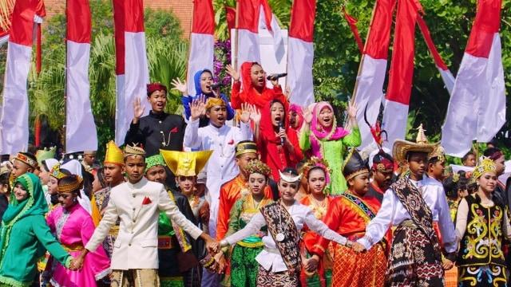

NUSANTARA SEBAGAI LANDASAN PERSATUAN DAN KESATUAN

Pendahuluan
Nusantara merupakan ruang kehidupan yang sejak dahulu dihuni oleh berbagai kelompok masyarakat dengan latar belakang sejarah, bahasa, adat istiadat, kebudayaan, dan tata kehidupan yang beragam. Keberagaman tersebut menjadi kenyataan yang melekat dalam kehidupan masyarakat di wilayah kepulauan Indonesia. Tidak ada satu wilayah, suku, bahasa, ataupun kebudayaan yang dapat mewakili seluruh kekayaan kehidupan Nusantara.
Namun, keberagaman bukanlah alasan untuk membangun pemisahan. Justru di tengah perbedaan itulah diperlukan kesadaran bersama mengenai pentingnya persatuan dan kesatuan. Nusantara tidak seharusnya dipahami sebagai kumpulan wilayah yang hanya berdekatan secara geografis, melainkan sebagai ruang kehidupan bersama yang memiliki keterhubungan sejarah, kepentingan, dan masa depan.
Persatuan bangsa tidak lahir hanya karena masyarakat berada dalam satu batas wilayah negara. Persatuan membutuhkan kesadaran bahwa kehidupan setiap kelompok masyarakat memiliki hubungan dengan kehidupan kelompok lainnya. Apa yang terjadi di satu wilayah dapat membawa dampak terhadap wilayah lain. Kepentingan suatu kelompok tidak dapat terus-menerus ditempatkan di atas kepentingan bangsa secara keseluruhan.
Oleh karena itu, Nusantara perlu ditempatkan sebagai salah satu landasan pemikiran dalam membangun persatuan dan kesatuan bangsa Indonesia.
1. Nusantara sebagai Ruang Kehidupan Bersama
Nusantara mencerminkan kenyataan geografis dan sosial berupa wilayah kepulauan yang terbentang luas dengan berbagai karakteristik alam serta kehidupan masyarakatnya. Laut, pulau, pegunungan, dataran, sungai, dan berbagai bentang alam lainnya bukanlah pemisah mutlak antarmasyarakat. Sejak masa lampau, hubungan antarpulau telah berlangsung melalui pelayaran, perdagangan, perpindahan penduduk, pertukaran pengetahuan, serta hubungan kebudayaan.
Keterhubungan tersebut memperlihatkan bahwa masyarakat di wilayah Nusantara tidak hidup sepenuhnya terpisah satu sama lain. Mereka membangun hubungan sesuai dengan keadaan, kebutuhan, dan perkembangan zamannya.
Dalam perjalanan sejarah, hubungan antarmasyarakat itu membentuk jaringan kehidupan yang luas. Perbedaan bahasa, adat, dan kebudayaan tetap dipertahankan, tetapi hubungan sosial dan pertukaran antarkelompok juga terus berlangsung.
Dengan demikian, Nusantara dapat dipahami sebagai ruang kehidupan bersama yang terbentuk melalui hubungan antarmasyarakat, bukan karena seluruh masyarakatnya memiliki kesamaan identitas.
Pemahaman ini penting karena persatuan Indonesia tidak mensyaratkan keseragaman. Masyarakat tidak harus meninggalkan identitas daerah, bahasa, maupun kebudayaannya untuk menjadi bagian dari bangsa Indonesia. Identitas kebangsaan justru menjadi ruang bersama yang menaungi seluruh keberagaman tersebut.
2. Keberagaman sebagai Kenyataan Bangsa
Indonesia memiliki keberagaman yang sangat luas. Setiap daerah mempunyai sejarah, tradisi, bahasa, pengetahuan lokal, dan karakter kehidupan masyarakat yang berbeda. Keberagaman tersebut merupakan kenyataan yang tidak dapat dihapus melalui kebijakan penyeragaman.
Persoalan muncul ketika perbedaan digunakan untuk membangun pertentangan, memperkuat kepentingan kelompok, atau menciptakan batas sosial yang menghambat kehidupan bersama.
Perbedaan pilihan politik, pandangan sosial, latar belakang budaya, maupun kepentingan daerah seharusnya tidak menjadi alasan untuk meniadakan hubungan kebangsaan. Setiap kelompok memiliki hak untuk mempertahankan identitasnya, tetapi hak tersebut juga perlu disertai tanggung jawab untuk menghormati hak kelompok lainnya.
Persatuan tidak berarti semua orang harus berpikir sama. Persatuan berarti masyarakat mampu hidup bersama, mengelola perbedaan, dan menyelesaikan pertentangan tanpa menghancurkan ikatan kebangsaan.
Karena itu, keberagaman perlu ditempatkan sebagai bagian dari kekuatan bangsa. Kekuatan tersebut hanya dapat terwujud apabila masyarakat memiliki kesadaran untuk saling menghormati dan tidak menjadikan perbedaan sebagai alat permusuhan.
3. Sejarah Nusantara dan Tumbuhnya Kesadaran Kebangsaan
Kesadaran kebangsaan Indonesia tumbuh melalui perjalanan sejarah yang panjang. Hubungan antarmasyarakat di berbagai wilayah Nusantara telah berlangsung jauh sebelum terbentuknya Negara Kesatuan Republik Indonesia.
Perdagangan, pelayaran, hubungan kebudayaan, serta pertemuan berbagai kelompok masyarakat membentuk jaringan kehidupan yang melampaui batas-batas wilayah lokal. Dalam perkembangan berikutnya, pengalaman menghadapi kolonialisme turut memperkuat kesadaran mengenai pentingnya perjuangan bersama.
Pergerakan kebangsaan kemudian mempertemukan berbagai kelompok masyarakat dalam gagasan mengenai satu tanah air, satu bangsa, dan satu bahasa persatuan. Sumpah Pemuda pada 28 Oktober 1928 menjadi salah satu tonggak penting dalam perkembangan kesadaran tersebut.
Proklamasi Kemerdekaan pada 17 Agustus 1945 selanjutnya menegaskan lahirnya Indonesia sebagai negara merdeka. Persatuan yang sebelumnya berkembang melalui kesadaran kebangsaan memperoleh bentuk politik dan kenegaraan.
Sejarah tersebut memperlihatkan bahwa persatuan Indonesia bukanlah sesuatu yang terbentuk secara tiba-tiba. Persatuan merupakan hasil perjalanan, perjuangan, kesadaran, dan kesediaan berbagai kelompok masyarakat untuk membangun masa depan bersama.
Oleh sebab itu, sejarah Nusantara tidak semestinya hanya dipandang sebagai catatan kejayaan kerajaan, pergantian kekuasaan, atau perkembangan kebudayaan daerah. Sejarah juga perlu dipahami sebagai perjalanan hubungan antarmasyarakat yang turut membentuk kesadaran kebangsaan Indonesia.
4. Nusantara Bukan Dasar untuk Mempertentangkan Identitas
Pemahaman mengenai Nusantara harus mampu menghindarkan bangsa dari kecenderungan mempertentangkan identitas daerah dengan identitas nasional.
Seseorang dapat tetap menjadi bagian dari masyarakat Jawa, Sunda, Minangkabau, Bugis, Batak, Dayak, Papua, Bali, dan berbagai kelompok masyarakat lainnya, sekaligus menjadi bagian dari bangsa Indonesia. Identitas daerah dan identitas nasional tidak harus saling meniadakan.
Persoalan kebangsaan muncul apabila identitas tertentu dianggap lebih tinggi daripada identitas lainnya, kemudian digunakan untuk membenarkan perlakuan tidak adil, diskriminasi, atau penguasaan terhadap kelompok lain.
Tidak ada satu kelompok masyarakat yang berhak mengklaim bahwa bangsa Indonesia sepenuhnya merupakan miliknya. Indonesia terbentuk melalui perjuangan dan keterlibatan berbagai kelompok masyarakat dari beragam wilayah.
Dengan demikian, Nusantara harus menjadi landasan untuk memperkuat rasa memiliki terhadap tanah air secara bersama-sama. Tidak boleh ada kelompok yang merasa menjadi pemilik tunggal bangsa, sementara kelompok lainnya hanya ditempatkan sebagai pelengkap.
5. Persatuan Membutuhkan Keadilan dan Kesetaraan
Persatuan tidak cukup dibangun melalui semboyan, seruan, ataupun simbol kebangsaan. Persatuan membutuhkan kenyataan kehidupan yang memberikan ruang bagi setiap masyarakat untuk memperoleh hak, kesempatan, dan perlindungan yang setara.
Ketimpangan pembangunan, ketidakadilan dalam pengelolaan sumber daya alam, diskriminasi, serta pemusatan kekuasaan dan kesempatan ekonomi dapat melemahkan rasa kebersamaan.
Masyarakat di berbagai wilayah Indonesia harus memperoleh kesempatan yang wajar untuk berkembang. Kekayaan alam suatu daerah tidak seharusnya hanya memberikan keuntungan kepada segelintir pihak, sementara masyarakat yang hidup di wilayah tersebut tidak memperoleh manfaat yang sepadan.
Pembangunan nasional juga tidak boleh hanya berpusat pada wilayah tertentu. Konektivitas, pendidikan, pelayanan kesehatan, infrastruktur, dan kesempatan ekonomi perlu dikembangkan dengan memperhatikan kebutuhan masyarakat di seluruh wilayah Indonesia.
Keadilan bukan sekadar persoalan pembagian hasil pembangunan. Keadilan juga berkaitan dengan penghormatan terhadap martabat manusia, perlindungan hak masyarakat, kesempatan berpartisipasi, dan keterlibatan daerah dalam menentukan masa depannya.
Tanpa keadilan, persatuan mudah berubah menjadi tuntutan sepihak. Sebaliknya, ketika masyarakat merasakan adanya kesetaraan dan perlakuan yang adil, rasa memiliki terhadap bangsa akan semakin kuat.
6. Ancaman terhadap Persatuan Nusantara
Persatuan bangsa dapat melemah ketika kepentingan kelompok ditempatkan di atas kepentingan nasional. Ancaman tersebut dapat muncul melalui berbagai bentuk, baik dari dalam negeri maupun melalui pengaruh kekuatan dari luar.
Pertentangan politik yang dipelihara secara berlebihan, politik identitas yang digunakan untuk memusuhi kelompok lain, penyebaran informasi menyesatkan, intoleransi, serta konflik antarkelompok dapat merusak hubungan sosial masyarakat.
Selain itu, korupsi, penyalahgunaan kekuasaan, oligarki, dan penguasaan sumber daya untuk kepentingan terbatas juga dapat memperlebar ketidakpercayaan masyarakat terhadap penyelenggaraan negara.
Dalam hubungan internasional, persaingan kepentingan ekonomi, politik, teknologi, dan penguasaan sumber daya dapat membawa tekanan terhadap kedaulatan nasional. Apabila bangsa tidak memiliki kesadaran bersama dan kemampuan menentukan kepentingannya sendiri, perbedaan internal dapat menjadi celah yang memperlemah posisi Indonesia.
Namun, setiap tuduhan mengenai adanya strategi pemecahbelahan yang dirancang oleh pihak tertentu harus didasarkan pada bukti yang dapat dipertanggungjawabkan. Kritik terhadap ancaman persatuan tidak boleh berubah menjadi penyebaran prasangka tanpa dasar.
Hal terpenting adalah membangun ketahanan masyarakat agar tidak mudah diadu domba, dimanipulasi, atau diarahkan untuk saling bermusuhan demi kepentingan pihak tertentu.
7. Menempatkan Nusantara sebagai Kesadaran Kebangsaan
Nusantara perlu dihidupkan sebagai kesadaran kebangsaan yang melampaui kepentingan daerah, kelompok, golongan, maupun kekuasaan politik.
Kesadaran tersebut dapat dibangun melalui pendidikan kebangsaan, pengenalan sejarah secara utuh, penghormatan terhadap kebudayaan daerah, pemerataan pembangunan, serta keterlibatan masyarakat dalam menjaga kepentingan nasional.
Pendidikan kebangsaan tidak cukup hanya mengajarkan nama wilayah, lambang negara, lagu kebangsaan, atau peristiwa sejarah. Pendidikan juga perlu menumbuhkan pemahaman mengenai hubungan antarmasyarakat, tanggung jawab sebagai warga negara, serta pentingnya menjaga kehidupan bersama.
Demikian pula, pelestarian budaya tidak seharusnya diarahkan untuk membangun persaingan mengenai kebudayaan mana yang paling unggul. Setiap kebudayaan memiliki sejarah dan nilai yang perlu dipahami sesuai dengan konteks masyarakatnya.
Kesadaran Nusantara juga harus tercermin dalam sikap terhadap sumber daya alam dan kekayaan nasional. Seluruh kekayaan tersebut merupakan bagian dari kepentingan bangsa yang pengelolaannya harus memperhatikan kemakmuran rakyat, keberlanjutan lingkungan, dan kedaulatan negara.
Dengan demikian, Nusantara bukan sekadar warisan masa lalu. Nusantara merupakan landasan untuk membangun kehidupan kebangsaan yang lebih adil, berdaulat, mandiri, dan bersatu.
Penutup
Nusantara merupakan ruang kehidupan bersama yang terbentuk melalui keberagaman wilayah, masyarakat, sejarah, bahasa, dan kebudayaan. Keberagaman tersebut bukanlah penghalang bagi persatuan Indonesia, melainkan kenyataan yang harus dipahami dan dikelola dengan kesadaran kebangsaan.
Persatuan tidak menuntut penghapusan identitas daerah. Persatuan juga tidak dapat dibangun melalui pemaksaan keseragaman. Persatuan membutuhkan kesediaan untuk saling menghormati, mengakui kesetaraan, menjaga keadilan, dan menempatkan kepentingan bangsa di atas kepentingan kelompok yang sempit.
Nusantara sebagai landasan persatuan dan kesatuan berarti menempatkan seluruh wilayah dan masyarakat Indonesia sebagai bagian yang tidak terpisahkan dari kehidupan bangsa. Tidak ada daerah yang boleh dipandang tidak penting, tidak ada kelompok yang boleh diperlakukan sebagai warga kelas dua, dan tidak ada kepentingan golongan yang dapat dibenarkan apabila merusak kepentingan nasional.
Bangsa Indonesia memiliki masa depan yang sama. Karena itu, menjaga persatuan bukan hanya tanggung jawab pemerintah, melainkan tanggung jawab seluruh elemen masyarakat.
Nusantara bukan tentang menyatukan semua perbedaan menjadi keseragaman, melainkan membangun kesadaran bahwa di tengah segala perbedaan, kita memiliki tanah air, bangsa, dan masa depan yang sama.
« KEMBALI KE BERANDA